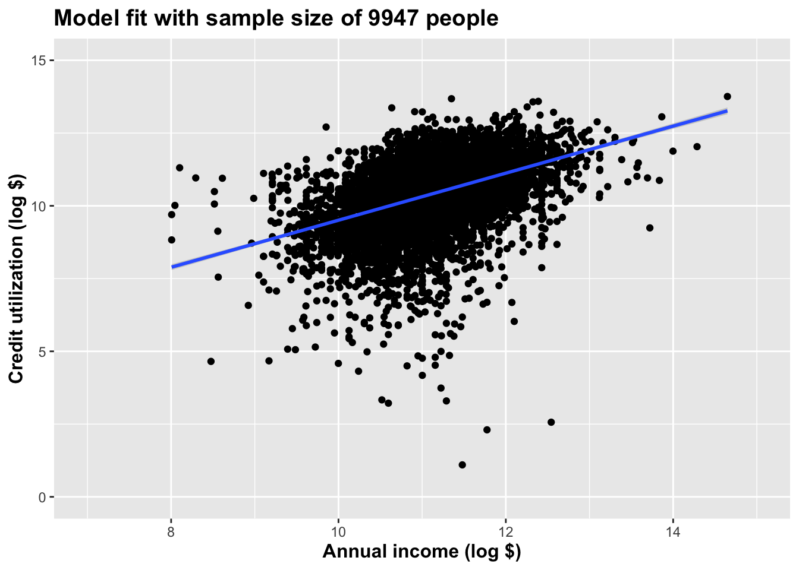
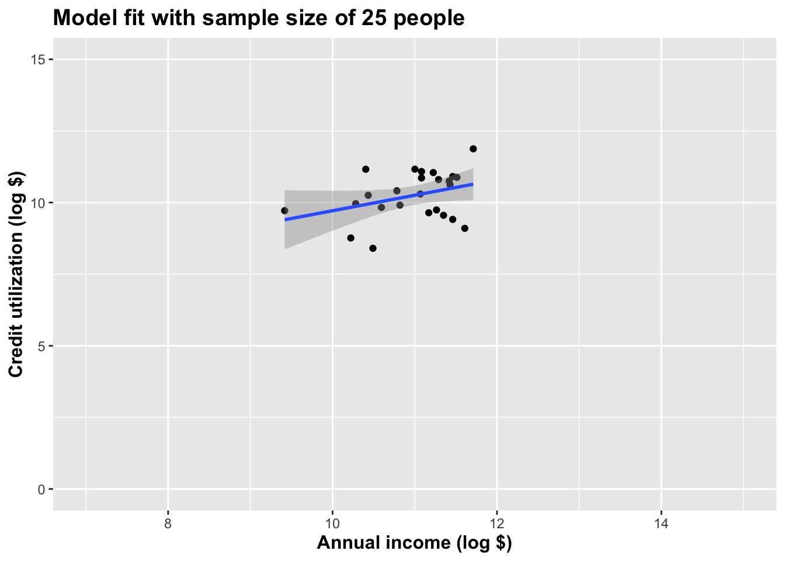
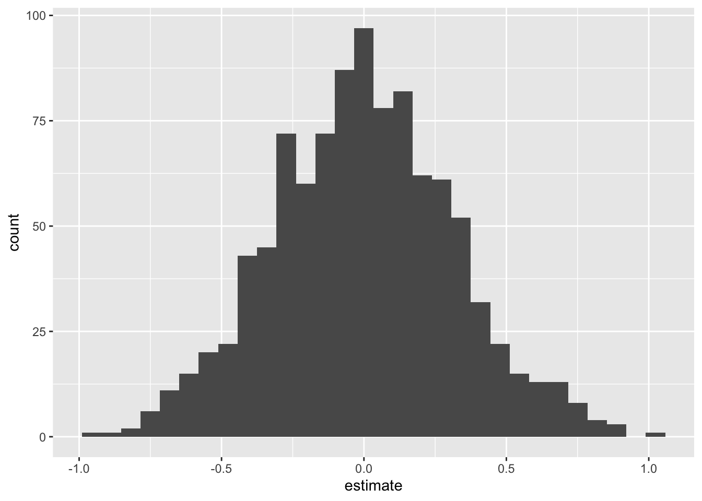
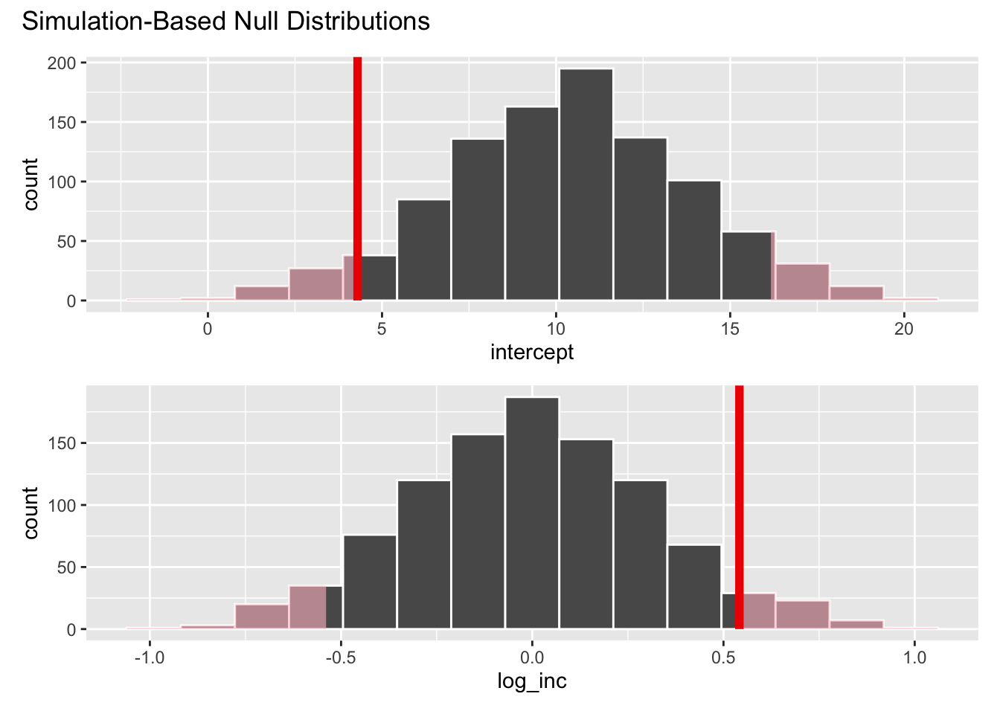

AE 16: loans again
In this application exercise, we will do hypothesis testing for the slope in the linear model.
Packages
We will use tidyverse and tidymodels for data exploration and modeling, respectively, and the openintro package for the data, and the knitr package for formatting tables.
Data
Here is the loans data again:
glimpse(loans_full_schema)Rows: 10,000
Columns: 55
$ emp_title <chr> "global config engineer ", "warehouse…
$ emp_length <dbl> 3, 10, 3, 1, 10, NA, 10, 10, 10, 3, 1…
$ state <fct> NJ, HI, WI, PA, CA, KY, MI, AZ, NV, I…
$ homeownership <fct> MORTGAGE, RENT, RENT, RENT, RENT, OWN…
$ annual_income <dbl> 90000, 40000, 40000, 30000, 35000, 34…
$ verified_income <fct> Verified, Not Verified, Source Verifi…
$ debt_to_income <dbl> 18.01, 5.04, 21.15, 10.16, 57.96, 6.4…
$ annual_income_joint <dbl> NA, NA, NA, NA, 57000, NA, 155000, NA…
$ verification_income_joint <fct> , , , , Verified, , Not Verified, , ,…
$ debt_to_income_joint <dbl> NA, NA, NA, NA, 37.66, NA, 13.12, NA,…
$ delinq_2y <int> 0, 0, 0, 0, 0, 1, 0, 1, 1, 0, 0, 0, 0…
$ months_since_last_delinq <int> 38, NA, 28, NA, NA, 3, NA, 19, 18, NA…
$ earliest_credit_line <dbl> 2001, 1996, 2006, 2007, 2008, 1990, 2…
$ inquiries_last_12m <int> 6, 1, 4, 0, 7, 6, 1, 1, 3, 0, 4, 4, 8…
$ total_credit_lines <int> 28, 30, 31, 4, 22, 32, 12, 30, 35, 9,…
$ open_credit_lines <int> 10, 14, 10, 4, 16, 12, 10, 15, 21, 6,…
$ total_credit_limit <int> 70795, 28800, 24193, 25400, 69839, 42…
$ total_credit_utilized <int> 38767, 4321, 16000, 4997, 52722, 3898…
$ num_collections_last_12m <int> 0, 0, 0, 0, 0, 0, 0, 0, 0, 0, 0, 0, 0…
$ num_historical_failed_to_pay <int> 0, 1, 0, 1, 0, 0, 0, 0, 0, 0, 1, 0, 0…
$ months_since_90d_late <int> 38, NA, 28, NA, NA, 60, NA, 71, 18, N…
$ current_accounts_delinq <int> 0, 0, 0, 0, 0, 0, 0, 0, 0, 0, 0, 0, 0…
$ total_collection_amount_ever <int> 1250, 0, 432, 0, 0, 0, 0, 0, 0, 0, 0,…
$ current_installment_accounts <int> 2, 0, 1, 1, 1, 0, 2, 2, 6, 1, 2, 1, 2…
$ accounts_opened_24m <int> 5, 11, 13, 1, 6, 2, 1, 4, 10, 5, 6, 7…
$ months_since_last_credit_inquiry <int> 5, 8, 7, 15, 4, 5, 9, 7, 4, 17, 3, 4,…
$ num_satisfactory_accounts <int> 10, 14, 10, 4, 16, 12, 10, 15, 21, 6,…
$ num_accounts_120d_past_due <int> 0, 0, 0, 0, 0, 0, 0, NA, 0, 0, 0, 0, …
$ num_accounts_30d_past_due <int> 0, 0, 0, 0, 0, 0, 0, 0, 0, 0, 0, 0, 0…
$ num_active_debit_accounts <int> 2, 3, 3, 2, 10, 1, 3, 5, 11, 3, 2, 2,…
$ total_debit_limit <int> 11100, 16500, 4300, 19400, 32700, 272…
$ num_total_cc_accounts <int> 14, 24, 14, 3, 20, 27, 8, 16, 19, 7, …
$ num_open_cc_accounts <int> 8, 14, 8, 3, 15, 12, 7, 12, 14, 5, 8,…
$ num_cc_carrying_balance <int> 6, 4, 6, 2, 13, 5, 6, 10, 14, 3, 5, 3…
$ num_mort_accounts <int> 1, 0, 0, 0, 0, 3, 2, 7, 2, 0, 2, 3, 3…
$ account_never_delinq_percent <dbl> 92.9, 100.0, 93.5, 100.0, 100.0, 78.1…
$ tax_liens <int> 0, 0, 0, 1, 0, 0, 0, 0, 0, 0, 0, 0, 0…
$ public_record_bankrupt <int> 0, 1, 0, 0, 0, 0, 0, 0, 0, 0, 1, 0, 0…
$ loan_purpose <fct> moving, debt_consolidation, other, de…
$ application_type <fct> individual, individual, individual, i…
$ loan_amount <int> 28000, 5000, 2000, 21600, 23000, 5000…
$ term <dbl> 60, 36, 36, 36, 36, 36, 60, 60, 36, 3…
$ interest_rate <dbl> 14.07, 12.61, 17.09, 6.72, 14.07, 6.7…
$ installment <dbl> 652.53, 167.54, 71.40, 664.19, 786.87…
$ grade <fct> C, C, D, A, C, A, C, B, C, A, C, B, C…
$ sub_grade <fct> C3, C1, D1, A3, C3, A3, C2, B5, C2, A…
$ issue_month <fct> Mar-2018, Feb-2018, Feb-2018, Jan-201…
$ loan_status <fct> Current, Current, Current, Current, C…
$ initial_listing_status <fct> whole, whole, fractional, whole, whol…
$ disbursement_method <fct> Cash, Cash, Cash, Cash, Cash, Cash, C…
$ balance <dbl> 27015.86, 4651.37, 1824.63, 18853.26,…
$ paid_total <dbl> 1999.330, 499.120, 281.800, 3312.890,…
$ paid_principal <dbl> 984.14, 348.63, 175.37, 2746.74, 1569…
$ paid_interest <dbl> 1015.19, 150.49, 106.43, 566.15, 754.…
$ paid_late_fees <dbl> 0, 0, 0, 0, 0, 0, 0, 0, 0, 0, 0, 0, 0…Let’s clean a wee bit:
Now let’s imagine we only had a tiny subset of these data to work with:
set.seed(8675309)
baby_loans <- full_loans |>
slice(sample(1:nrow(full_loans), 25))
glimpse(baby_loans)Rows: 25
Columns: 57
$ emp_title <chr> "chaplain/bereavement", "owner", "dir…
$ emp_length <dbl> 6, 10, 2, NA, 5, 10, NA, 10, 3, 2, 7,…
$ state <fct> CA, AL, IL, FL, NJ, WI, AZ, MI, ND, M…
$ homeownership <fct> MORTGAGE, MORTGAGE, MORTGAGE, OWN, RE…
$ annual_income <dbl> 78000, 85000, 91000, 29200, 95000, 80…
$ verified_income <fct> Source Verified, Source Verified, Sou…
$ debt_to_income <dbl> 4.86, 4.44, 19.57, 37.61, 19.39, 19.2…
$ annual_income_joint <dbl> NA, 135000, NA, NA, NA, NA, NA, NA, N…
$ verification_income_joint <fct> , Source Verified, , , , , , , , , So…
$ debt_to_income_joint <dbl> NA, 2.79, NA, NA, NA, NA, NA, NA, NA,…
$ delinq_2y <int> 1, 0, 0, 1, 0, 0, 0, 0, 0, 0, 0, 0, 9…
$ months_since_last_delinq <int> 7, NA, NA, 21, NA, 53, 43, 80, NA, NA…
$ earliest_credit_line <dbl> 1999, 2003, 2006, 1978, 1995, 2001, 1…
$ inquiries_last_12m <int> 4, 0, 1, 2, 3, 2, 3, 4, 1, 1, 0, 0, 0…
$ total_credit_lines <int> 26, 21, 27, 34, 29, 22, 33, 16, 14, 1…
$ open_credit_lines <int> 8, 5, 8, 8, 13, 13, 23, 10, 7, 10, 17…
$ total_credit_limit <int> 586203, 251690, 392003, 45829, 467400…
$ total_credit_utilized <int> 17050, 14125, 46564, 21228, 54739, 49…
$ num_collections_last_12m <int> 0, 0, 0, 0, 0, 0, 0, 0, 0, 0, 0, 0, 0…
$ num_historical_failed_to_pay <int> 0, 0, 0, 0, 0, 0, 0, 0, 0, 0, 0, 0, 0…
$ months_since_90d_late <int> NA, NA, NA, 27, NA, 62, NA, 80, NA, N…
$ current_accounts_delinq <int> 0, 0, 0, 0, 0, 0, 0, 0, 0, 0, 0, 0, 0…
$ total_collection_amount_ever <int> 0, 0, 0, 0, 0, 1796, 160, 8587, 0, 0,…
$ current_installment_accounts <int> 1, 1, 3, 2, 1, 1, 2, 1, 0, 0, 4, 0, 1…
$ accounts_opened_24m <int> 4, 2, 6, 5, 7, 5, 8, 1, 7, 6, 5, 6, 3…
$ months_since_last_credit_inquiry <int> 5, 15, 1, 3, 0, 8, 6, 6, 10, 9, NA, 1…
$ num_satisfactory_accounts <int> 8, 5, 8, 8, 13, 13, 23, 10, 7, 10, 17…
$ num_accounts_120d_past_due <int> 0, 0, 0, 0, 0, 0, 0, 0, 0, 0, 0, 0, 0…
$ num_accounts_30d_past_due <int> 0, 0, 0, 0, 0, 0, 0, 0, 0, 0, 0, 0, 0…
$ num_active_debit_accounts <int> 2, 1, 3, 2, 4, 6, 10, 4, 5, 4, 6, 5, …
$ total_debit_limit <int> 24200, 15500, 24100, 3000, 149000, 19…
$ num_total_cc_accounts <int> 16, 12, 15, 27, 21, 14, 28, 11, 11, 1…
$ num_open_cc_accounts <int> 6, 3, 4, 6, 11, 11, 20, 9, 5, 10, 13,…
$ num_cc_carrying_balance <int> 3, 1, 4, 4, 4, 7, 12, 7, 5, 5, 10, 8,…
$ num_mort_accounts <int> 3, 4, 2, 0, 3, 4, 1, 0, 0, 0, 0, 0, 0…
$ account_never_delinq_percent <dbl> 96.0, 100.0, 100.0, 75.8, 100.0, 90.9…
$ tax_liens <int> 0, 0, 0, 0, 0, 0, 0, 0, 0, 0, 0, 0, 0…
$ public_record_bankrupt <int> 0, 0, 0, 0, 0, 0, 0, 0, 0, 0, 0, 0, 0…
$ loan_purpose <fct> debt_consolidation, moving, credit_ca…
$ application_type <fct> individual, joint, individual, indivi…
$ loan_amount <int> 9000, 10000, 32000, 8200, 5000, 32000…
$ term <dbl> 36, 60, 60, 36, 36, 60, 36, 36, 36, 3…
$ interest_rate <dbl> 7.96, 9.93, 11.98, 20.39, 18.06, 21.4…
$ installment <dbl> 281.87, 212.13, 711.50, 306.38, 180.9…
$ grade <fct> A, B, B, D, D, D, C, B, A, B, D, C, B…
$ sub_grade <fct> A5, B2, B5, D4, D2, D5, C3, B1, A3, B…
$ issue_month <fct> Mar-2018, Feb-2018, Mar-2018, Mar-201…
$ loan_status <fct> Current, Current, Current, Current, C…
$ initial_listing_status <fct> whole, whole, whole, whole, fractiona…
$ disbursement_method <fct> Cash, Cash, Cash, Cash, Cash, Cash, C…
$ balance <dbl> 8329.06, 9476.02, 30812.11, 7690.29, …
$ paid_total <dbl> 841.63, 834.73, 2059.96, 900.56, 899.…
$ paid_principal <dbl> 670.94, 523.98, 1187.89, 509.71, 544.…
$ paid_interest <dbl> 170.69, 310.75, 872.07, 390.85, 355.0…
$ paid_late_fees <dbl> 0, 0, 0, 0, 0, 0, 0, 0, 0, 0, 0, 0, 0…
$ log_cred <dbl> 9.743905, 9.555702, 10.748583, 9.9630…
$ log_inc <dbl> 11.264464, 11.350407, 11.418615, 10.2…With so little information, can we draw super strong conclusions?
Plot
Plot the full thing:
full_loans |>
ggplot(aes(x = log_inc, y = log_cred)) +
geom_point() +
geom_smooth(method = "lm") +
xlim(7, 15) +
ylim(0, 15) +
labs(
x = "Annual income (log $)",
y = "Credit utilization (log $)",
title = paste("Model fit with sample size of ", nrow(full_loans), " people", sep = "")
) +
theme(title = element_text(size = 12, face = "bold"))`geom_smooth()` using formula = 'y ~ x'
Plot the baby thing:
baby_loans |>
ggplot(aes(x = log_inc, y = log_cred)) +
geom_point() +
geom_smooth(method = "lm") +
xlim(7, 15) +
ylim(0, 15) +
labs(
x = "Annual income (log $)",
y = "Credit utilization (log $)",
title = paste("Model fit with sample size of ", nrow(baby_loans), " people", sep = "")
) +
theme(title = element_text(size = 12, face = "bold"))`geom_smooth()` using formula = 'y ~ x'
Inference with the small dataset
Point estimate
observed_fit <- baby_loans |>
specify(log_cred ~ log_inc) |>
fit()
observed_fit# A tibble: 2 × 2
term estimate
<chr> <dbl>
1 intercept 4.30
2 log_inc 0.542Simulate the null distribution
We are testing \(H_0: \beta_1=0\) versus the alternative \(H_A: \beta_1\neq 0\).
set.seed(20241118)
null_dist <- baby_loans |>
specify(log_cred ~ log_inc) |>
hypothesize(null = "independence") |>
generate(reps = 1000, type = "permute") |>
fit()Here’s what it looks like. Note that it’s centered at zero, because if the null were true and the true slope was in fact zero, we would expect noisy, imperfect estimates of the slope to wiggle around 0:
null_dist |>
filter(term == "log_inc") |>
ggplot(aes(x = estimate)) +
geom_histogram()`stat_bin()` using `bins = 30`. Pick better value with `binwidth`.
Where does our actual point estimate fall under the null distribution?
Shade the \(p\)-value:
visualize(null_dist) +
shade_p_value(obs_stat = observed_fit, direction = "two-sided")
null_dist |>
get_p_value(obs_stat = observed_fit, direction = "two-sided")# A tibble: 2 × 2
term p_value
<chr> <dbl>
1 intercept 0.096
2 log_inc 0.096Interpretation: if the null were true (the true slope was zero), then the probability of data as or more extreme than what we saw in about 10%. At a 5% discernibility level, we fail to reject the null. With the data we have, you can’t discern with tremendously high confidence whether the null is true or not. We just don’t know.